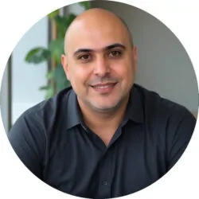
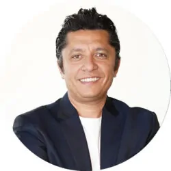
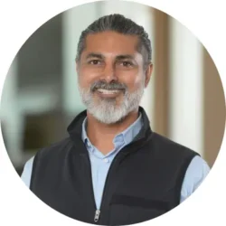
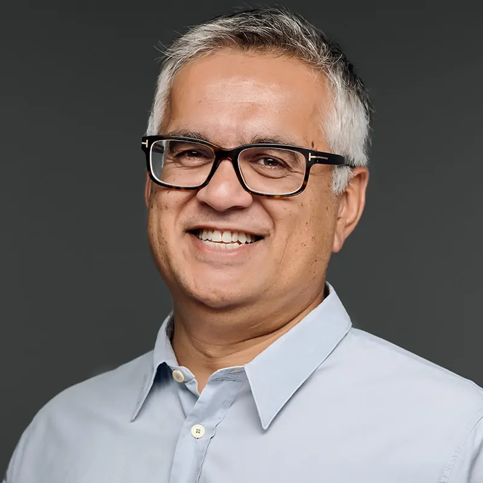

History
TechCon 2024 is a leading organization founded in 2019, dedicated to connecting entrepreneurs,
investors, and industry leaders through high-impact events. We empower innovation and foster
investment ecosystems that drive sustainable growth and meaningful change worldwide.
TechCon Global emerged from a vision to empower future innovators and create inclusive opportunities
in the ecosystem. What began as a single regional conference has evolved into a global movement,
bridging communities, breaking down barriers, and shaping the future through dynamic events and
meaningful engagement. Driven by purpose and passion, TechCon Global continues to expand its reach,
uniting bold thinkers, visionary founders, and impact-driven investors to shape the next wave of
innovation.
Past Speakers
Dr. Aadeel Akhtar is the CEO and Founder of PSYONIC, a company developing advanced bionic limbs that
are accessible to humans and robots. Dr. Akhtar received his Ph.D. in Neuroscience and M.S. in
Electrical & Computer Engineering from the University of Illinois at Urbana-Champaign in 2016. He
received a B.S. in Biology in 2007 and M.S. in Computer Science in 2008 at Loyola University
Chicago. In 2021, he was named as one of MIT Technology Review’s top 35 Innovators Under 35 and
America’s Top 50 Disruptors in Newsweek.
Aasim Hasan is a Managing Partner at Moneta Ventures and founded the Texas headquarters of Moneta
Ventures in 2017.
As a Managing Partner, Aasim is involved in all aspects of running Moneta Ventures, including
fundraising, new investment reviews, and helping with the overall strategy of the fund. He also
leads Moneta’s co-investor network and go-to-market playbook. Aasim has a special interest in
helping build the VC ecosystem in Texas; he has been a proud resident of Austin, TX, since 1990.
Before Moneta, Aasim led the global Energy and Utilities Industry Business Unit at KPIT. Aasim was a
partner at Sparta Consulting, where he served as Executive Vice President and played a crucial role
in growing the company to over $125 million in five years. He was also formerly Senior Vice
President of Sales & Marketing and a member of the Executive Council at Fujitsu Consulting, a
Fortune Global 500 company. He played a crucial role in evaluating potential target companies for
acquisitions, leading due diligence efforts and deal negotiations, and leading the integration
efforts of acquired companies. Aasim started his career three decades ago at Price Waterhouse in
Management Consulting.
Abhishek is an experienced investor and serves as the Managing Director of Prosperity 7 Ventures in
the US. Prosperity 7 is a diversification fund backed by Saudi Aramco with $5B AUH. His areas of
investment interest include AI, Infrastructure., Silicon ,Networking, Storage, Data Infrastructure,
IoT, Cybersecurity, Edge to Cloud computing, and frontier technologies such as Quantum Computing.
Outside of work, Abhishek is an adventure sport enthusiast and a certified scuba diver who has taken
multiple dives with great white sharks.
Adam Markowitz is the co-founder and CEO of Drata, a trust management platform that champions
AI-driven automation to streamline governance, risk, and compliance for over 7,000 companies across
the globe, including Calendly, Notion, and Lemonade, among many others. Prior to Drata, Adam was the
founder and CEO of Portfolium, an academic portfolio network for students and alumni to visually
showcase their work and projects directly to employers, faculty, and fellow students/alumni.
Portfolium was acquired by Instructure (NYSE:INST) in 2019.
He also worked as an aerospace engineer designing, analyzing and testing liquid rocket engines for
NASA’s next generation space launch vehicle as well as the Space Shuttle Main Engine. He was most
recently noted as one of San Diego’s Most Influential People for 2024. Adam earned a B.S. in
Structural Engineering from UC San Diego and an M.S. in Astronautical Engineering from the
University of Southern California.

Alex Mojtahedi is a serial entrepreneur, investor, and technologist. Prior to founding Peachscore—the
world’s largest data-driven accelerator—he served on the management team at Plug and Play, where he
founded and launched the Media & Ad Accelerator, managed a $10M fund, and invested in over 20
startups, building a portfolio valued at $600M with multiple exits and one IPO. Alex was also
recognized as Investor of the Month at Mobile World Congress 2018 in Los Angeles and has been
featured in reputable publications including Inc. Magazine.

Amir Barsoum is a serial entrepreneur and seasoned investor, renowned for founding, scaling, and
exiting transformative ventures. Named by Fortune as one of the 40 Under 40 Global Leaders, Amir
founded Vezeeta, the leading digital healthcare platform in MEA, growing it to 1,000+ professionals
serving 30 million patients annually across five countries, and exited through a landmark
acquisition by the region’s largest private equity firm.

Amit is a go-to transactional lawyer leading venture capital, private equity, and technology
transactions, mergers and acquisitions, and joint ventures. He has more than two decades of
experience handling sophisticated business transactions and frequently serves as outside general
counsel to life sciences and technology companies.
Amit has a broad client base that spans companies and investors in a variety of industries,
including software, hardware, communications, artificial intelligence and networking, internet-based
technology, manufacturing and distribution, biotechnology, diagnostics, and medical devices.
Deploying his extensive knowledge of his clients’ businesses and industries, he provides pragmatic
legal counsel that advances their business goals. Experience overseeing hundreds of complex
transactions, particularly for IP-centric companies, informs his guidance on a diverse range of
sophisticated corporate matters.

Ammar Hanafi is Co-Founder and General Partner of Moment Ventures. Moment is focused on early stage
investments in teams targeting future of industry transformations. Ammar received a BS in Applied
and Engineering Physics from Cornell University and an MBA from Stanford University. Prior to
Moment, Ammar was at Alloy Ventures where he led investments in Mavenir Systems, Inc. (IPO) and
Cortina Systems, Inc. (acquired) among others. Ammar previously served as VP of Corporate
Development at Cisco Systems leading over 50 acquisitions and $750 million in venture capital
investments.